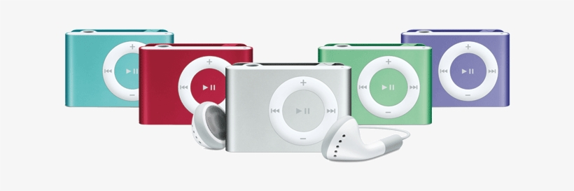

- 1st Generation
- 2nd Generation
- 3rd Generation

2nd Generation.
On September 12, 2006, Apple announced the release of the second-generation iPod Shuffle, calling it "the most wearable iPod ever".
First shipments of the unit were slated for an October 2006 arrival,
but actually started shipping on Friday, November 3, 2006.
The second generation initially featured a lone 1 GB model in a silver brushed aluminum case,
similar to the second-generation iPod Nano and the older iPod Mini.
The new model was less than half the size of the first-generation model at 41.2 x 27.3 x 10.5 mm (1.62 x 1.07 x 0.41 in),
and was the size of the iPod Radio Remote. Apple claimed it was the "world's smallest MP3 player".
This generation included the new built-in belt clip, and the actual unit itself was thinner, with the entire device weighing only 15.5 g (0.55 ounces).
The power/shuffle/no shuffle switch from the first-generation version was separated into two controls to avoid an accidentally selected mode of operation